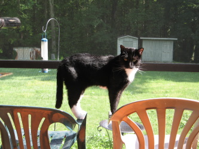
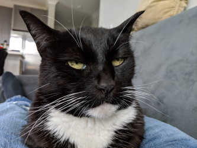
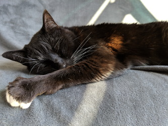
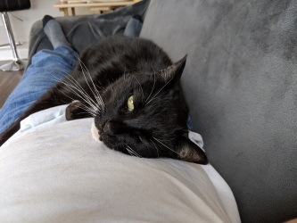

Cat-A-Log Item: Lily
I saved Lily from the Mobile Bay bridge.
I wrote a brief story about the rescue and sent it to Cat Fancy magazine. I don't know if they ever published it.
Lily remains afraid of people and new situations to this day. She is the most affectionate, least aggressive cat I've owned.



